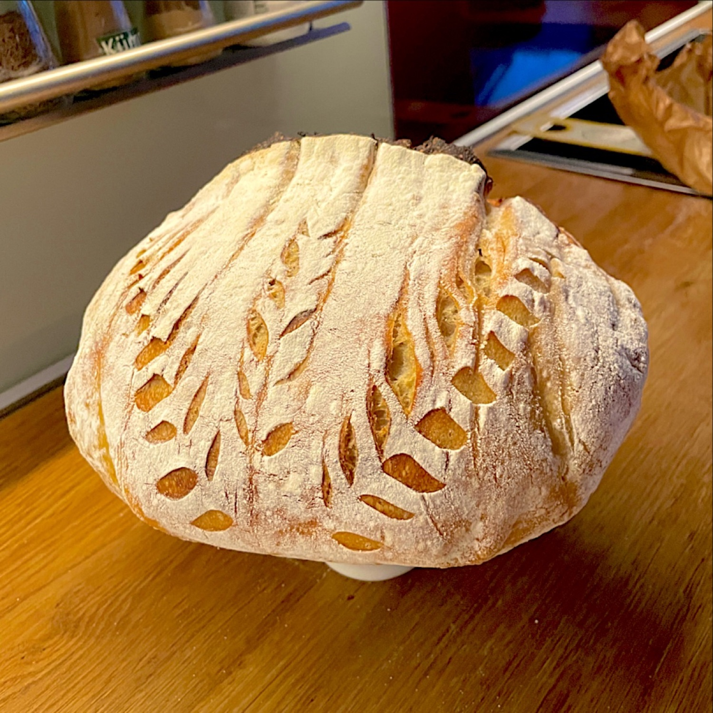
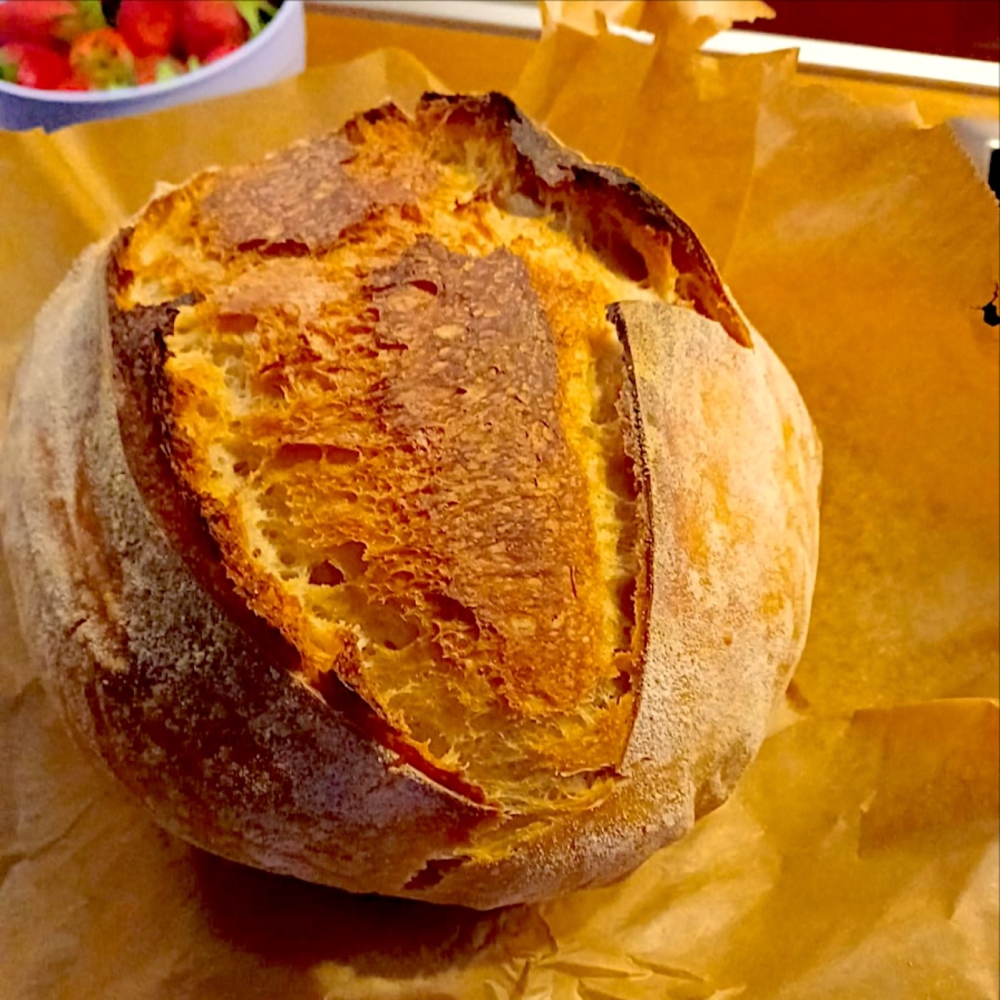

Blog
Notizen über Sauerteig, und darüber, wie die App arbeitet.
 Aller Anfang ist Mehl und Wasser: wie Sourdough Diary entstand
Ein Starter, der halbwegs funktionierte, peinlich viele flache Brote, fünf Gläser im Kühlschrank und eine Kollegin mit einer Million Fragen.
Aller Anfang ist Mehl und Wasser: wie Sourdough Diary entstand
Ein Starter, der halbwegs funktionierte, peinlich viele flache Brote, fünf Gläser im Kühlschrank und eine Kollegin mit einer Million Fragen.

Wie viel Starter kommt in den Sauerteig? 20 % der Mehlmenge sind üblich und geben bei 22 °C etwa vier Stunden Stockgare. Weniger Starter heißt längere Stockgare, und damit passt du den Teig an deinen Tag an. Sauerteigbrot am selben Tag, ohne Kühlschrank
Am Vorabend den Starter füttern, um sieben mischen, und um Viertel nach zwei ist das Brot aus dem Ofen. Ein Zeitplan für Sauerteigbrot an einem Tag, und was du dafür aufgibst.
Sauerteigbrot am selben Tag, ohne Kühlschrank
Am Vorabend den Starter füttern, um sieben mischen, und um Viertel nach zwei ist das Brot aus dem Ofen. Ein Zeitplan für Sauerteigbrot an einem Tag, und was du dafür aufgibst.
 Sauerteig-Starter ansetzen, Tag für Tag
Mehl, Wasser und etwa zehn Tage. Was du jeden Tag tust, wie das Glas aussehen und riechen soll, und warum die stillen Tage in der Mitte normal sind.
Sauerteig-Starter ansetzen, Tag für Tag
Mehl, Wasser und etwa zehn Tage. Was du jeden Tag tust, wie das Glas aussehen und riechen soll, und warum die stillen Tage in der Mitte normal sind.
 Ein Sauerteig-Zeitplan für einen Arbeitstag
Vor der Arbeit füttern, am Abend den Teig machen, am nächsten Tag backen. Ein Sauerteig-Zeitplan mit Uhrzeiten, der neben einen normalen Arbeitstag passt.
Ein Sauerteig-Zeitplan für einen Arbeitstag
Vor der Arbeit füttern, am Abend den Teig machen, am nächsten Tag backen. Ein Sauerteig-Zeitplan mit Uhrzeiten, der neben einen normalen Arbeitstag passt.

Warum geht mein Sauerteig-Starter an Tag 4 nicht mehr auf? Ein neuer Starter, der an Tag 2 oder 3 aufgegangen ist und dann flach bleibt, ist nicht tot. Das erste Aufgehen kam von Bakterien, die nicht bleiben. Weiterfüttern.